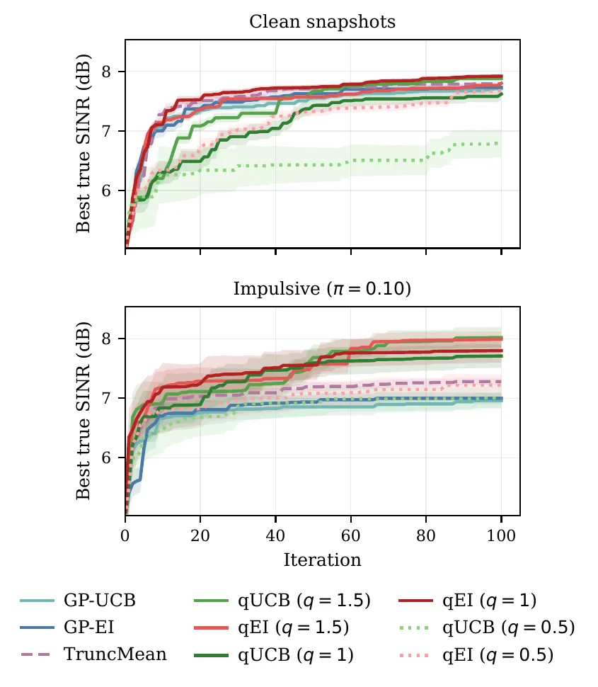

Preprint, 2026
Robust Bayesian Optimization with Q-Exponential Surrogates
TL;DR. Standard Bayesian optimization can chase a corrupted evaluation because its Gaussian predictive assigns too little probability to extreme outcomes. q-ED-BO keeps the usual closed-form GP location and scale, then reshapes the predictive tail with a single parameter \(q\). It recovers GP-BO at \(q=2\), retains a no-regret q-UCB rule, and improves the strongest baseline under impulsive corruption in both signal-processing tasks.
Abstract
Bayesian optimization (BO) is a widely used framework for optimizing expensive black-box objectives, but standard BO methods often use Gaussian process (GP) surrogates whose Gaussian assumption is sensitive to outliers and heavy-tailed noise. We introduce q-ED-BO, a robust BO method whose surrogate follows a univariate q-exponential (q-ED) distribution, preserving GP-BO's closed-form posterior mean and variance while a shape parameter q controls the tail behavior, recovering the GP at q = 2 and growing heavier-tailed with wider confidence bounds as q decreases. This tractability yields a closed-form q-upper confidence bound (q-UCB) with sublinear regret, and an exact closed-form q-expected improvement (q-EI) that generalizes EI to the heavy-tailed predictive, recovering classical EI at q = 2. Experiments on beamformer and adaptive filter tuning with impulsive outliers show that q-ED-BO matches or exceeds existing baselines on clean data, and under corruption, improves the strongest baseline by approximately 0.7 dB in output SINR and 1.1 to 1.2 dB in misalignment reduction.
q-ED Bayesian Optimization
q-ED-BO separates two jobs that are coupled in ordinary GP-BO. The kernel posterior still says where the objective is likely to be high and where data are sparse. The q-exponential predictive says how strongly the optimizer should trust that local picture when evaluations can be corrupted. This separation preserves the computational structure of GP-BO while changing the uncertainty that drives the next query.
Why Robustness Must Reach the Predictive
Bayesian optimization searches for the optimum of an expensive black box with a probabilistic surrogate and an acquisition function1. Gaussian processes are attractive because their posterior location and scale are available in closed form2. The Gaussian assumption is also brittle. A single corrupted evaluation can move the posterior mean and inflate uncertainty around a spurious region3. Because the acquisition reads that predictive distribution directly, the optimizer can spend later evaluations chasing the corruption.
- Heavy-tailed likelihood. A Student-\(t\) likelihood can reduce the influence of an outlying observation, but the GP and Student-\(t\) pair is not conjugate, so inference is approximate4.
- Heavy-tailed prior. A Student-\(t\) process gives an exact heavy-tailed predictive, but its polynomial tails do not provide the exponential concentration used by UCB regret analysis5.
- Truncated rewards. Truncation controls heavy-tailed observation noise, but it does not directly model a corrupted objective predictive6.
The design target is therefore specific. The predictive itself should be heavy-tailed, analytically tractable, and concentrated enough to calibrate a confidence bound. The q-exponential family supplies all three properties.
The q-Exponential Surrogate
Let \(\mu_t(\mathbf{x})\) and \(\sigma_t^2(\mathbf{x})\) be the usual GP posterior quantities after \(t\) evaluations. q-ED-BO uses them as the location and scale of a univariate q-exponential distribution7.
The distinction between scale and variance matters. The predictive mean is \(\mu_t(\mathbf{x})\), while its variance is \(c(q)\sigma_t^2(\mathbf{x})\), where
At \(q=2\), \(c(2)=1\) and the predictive is exactly Gaussian. For \(0\lt q\lt 2\), the density is more peaked at its mode and decays more slowly in the tails. Decreasing \(q\) therefore changes both the shape of uncertainty and its variance. It does not move the GP location, change the kernel, or require a new matrix inverse. This is stronger than merely inflating a Gaussian variance because variance inflation leaves the Gaussian tail shape unchanged.
A useful representation makes the construction intuitive. If \(U\sim q\text{-ED}_1(m,\sigma^2)\), then \(U=m+R\sigma S\), where \(S\) is equally likely to be \(-1\) or \(+1\) and \(R^q\) follows a chi-squared distribution with one degree of freedom. Equivalently, \(R\) has the same distribution as \(|N|^{2/q}\) for a standard normal \(N\). The parameter \(q\) acts only through this radial transformation.
From the Tail Lemma to a Confidence Width
If \(U\sim q\text{-ED}_1(m,\sigma^2)\), then for every \(r\geq 0\),
The derivation is short because of the radial representation. The event \(|U-m|>r\sigma\) is the same as \(R>r\). Substituting \(R=|N|^{2/q}\) turns it into the Gaussian event \(|N|>r^{q/2}\). Applying the standard Gaussian tail bound gives the stretched-exponential decay above. No numerical integration is needed.
To make this guarantee hold for every candidate point and every round, the paper assigns failure probability \(\delta_t=6\delta/(\pi^2t^2)\) and applies a union bound. Inverting the lemma then gives
This is the key bridge from distributional robustness to an acquisition rule. Smaller \(q\) means a larger width \(\rho_t\), so the optimizer explores more aggressively when the predictive assigns greater probability to extreme deviations.
q-UCB and Its Regret Guarantee
q-UCB inserts the new confidence width into the familiar GP-UCB score8. At round \(t\), it selects the point maximizing
For a finite search domain, fixed kernel and noise variance, and valid q-ED tail probabilities, q-UCB satisfies with probability at least \(1-\delta\)
Here \(\gamma_T\) is the kernel's maximum information gain and \(C_1\) is the usual information-gain constant. The proof follows the standard UCB route. The tail lemma creates a simultaneous confidence event, instantaneous regret is at most \(2\rho_t\sigma_{t-1}(\mathbf{x}_t)\), information gain controls the sum of posterior variances, and Cauchy-Schwarz converts those per-round bounds into the cumulative result.
At \(q=2\), \(\rho_t=\Lambda_t^{1/2}\) and the classical GP-UCB rate is recovered. For \(q\lt 2\), the confidence width grows by \(\Lambda_t^{1/q-1/2}\). This is the precise price of a heavier predictive tail. The penalty is logarithmic, while the leading \(\sqrt{T\gamma_T}\) dependence is unchanged.
Exact q-Expected Improvement
q-EI scores the expected positive improvement over the best observed value \(f^+\)9. Define the standardized gap \(d=(\mu_t(\mathbf{x})-f^+)/\sigma_t(\mathbf{x})\). Under the q-exponential predictive, the standardized CDF and upper partial first moment are
Standardizing the improvement gives \(\mathrm{E}[(d+Z)_+]\). Symmetry splits this expectation into a location term, \(dF_q(d)\), and an upper-tail partial moment. The substitution \(v=z^q/2\) evaluates that remaining integral as \(M_q(|d|)\). The resulting acquisition is exact.
When \(q=2\), \(F_2\) becomes the Gaussian CDF and \(M_2\) becomes the Gaussian density, exactly recovering classical EI. Unlike q-UCB, q-EI does not yet have a regret guarantee. Even Gaussian EI does not admit the same direct confidence-interval argument, so extending existing consistency results remains open10.
The Optimization Loop
- Evaluate a small initial design and form the first dataset.
- Refit kernel hyperparameters with \(q\) fixed, then compute the GP posterior location and scalea.
- Choose the next query by maximizing q-UCB or q-EI.
- Evaluate the black box and append the new observation.
- Repeat until the budget is exhausted, then return the best observed point.
Only the predictive tail and the acquisition score change. The method remains compatible with any valid kernel, including kernels adapted during the search11. The experiments suggest \(q=1.5\) as a safe default. Smaller values create heavier tails and stronger exploration, which can help under severe corruption but can over-explore when the data are clean.
Experiments
Both tasks treat a full signal-processing pipeline as the black box. The beamformer returns output SINR. The adaptive filter returns steady-state misalignment reduction. Higher is better in both cases. Every method uses 5 Sobol starts, a budget of 100 queries, a squared-exponential kernel, L-BFGS to maximize the acquisition, and 10 seeds. Baselines are GP-UCB, GP-EI, Student-\(t\)-process EI, and truncated-mean GP-UCB, each compared with \(q\)-UCB and \(q\)-EI at \(q\in\{1.5,1,0.5\}\).
Beamformer Tuning
The objective is the output SINR of a robust minimum-variance distortionless-response beamformer12, over four design parameters: diagonal loading, look direction, the robust Capon uncertainty radius, and covariance shrinkage. The array is a 16-element uniform linear array with 24 snapshots, a signal of interest at broadside (SNR 10 dB), and four interferers (INR 25 dB), one of them near the mainlobe. Clean snapshots are Gaussian. In the impulsive regime, burst and Cauchy outliers (peak rate 0.10 near the interferer directions, floor 0.05) corrupt both the sample covariance and the online SINR meter, together with meter noise of standard deviation 0.35 dB.
On clean data the methods largely agree. GP-UCB, Student-\(t\)-process EI, truncated-mean GP-UCB, and \(q\)-UCB at \(q=1.5\) finish within about 0.2 dB of each other, and \(q\)-EI at \(q=1\) is best overall, so a mildly heavy-tailed predictive is essentially free when there are no outliers. At \(q=0.5\), \(q\)-UCB loses about 1 dB to GP-UCB because the wider intervals explore too much. Under impulsive corruption, \(q\)-UCB and \(q\)-EI at \(q=1.5\) beat truncated-mean GP-UCB, the strongest baseline, by about 0.7 dB. Those gains are significant under a paired Wilcoxon signed-rank test across seeds (\(p\lt0.05\))13. Truncation robustifies the fit and leaves a Gaussian predictive on the objective, so the search can still lock onto a corrupted region. The setting \(q=0.5\) again over-explores.

Figure 1. Best true output SINR versus iteration (mean ± standard error over 10 seeds). Top: clean Gaussian snapshots. Bottom: impulsive corruption of the snapshots and the SINR meter.
| Method | MVDR clean | MVDR impulsive | NLMS clean | NLMS impulsive |
|---|---|---|---|---|
| GP-UCB | 7.71 ± 0.12 | 6.96 ± 0.37 | 30.4 ± 0.22 | 13.9 ± 0.61 |
| GP-EI | 7.73 ± 0.17 | 7.00 ± 0.28 | 30.5 ± 0.19 | 14.2 ± 0.52 |
| TP-EI | 7.71 ± 0.17 | 6.87 ± 0.32 | 30.2 ± 0.26 | 13.6 ± 0.66 |
| TruncMean | 7.79 ± 0.11 | 7.28 ± 0.18 | 30.3 ± 0.21 | 14.7 ± 0.38 |
| \(q\)-UCB (\(q=1.5\)) | 7.88 ± 0.15 | 8.02 ± 0.53 | 30.6 ± 0.18 | 15.9 ± 0.44 |
| \(q\)-UCB (\(q=1\)) | 7.62 ± 0.28 | 7.71 ± 0.59 | 30.1 ± 0.31 | 15.4 ± 0.57 |
| \(q\)-UCB (\(q=0.5\)) | 6.79 ± 0.70 | 7.01 ± 0.56 | 28.4 ± 0.74 | 13.8 ± 0.83 |
| \(q\)-EI (\(q=1.5\)) | 7.80 ± 0.10 | 7.99 ± 0.40 | 30.5 ± 0.14 | 15.8 ± 0.38 |
| \(q\)-EI (\(q=1\)) | 7.92 ± 0.11 | 7.80 ± 0.60 | 30.4 ± 0.20 | 15.4 ± 0.55 |
| \(q\)-EI (\(q=0.5\)) | 7.68 ± 0.20 | 7.22 ± 0.55 | 29.9 ± 0.35 | 14.3 ± 0.55 |
Table 1. Final objective (mean ± standard error over 10 seeds, higher is better). MVDR columns are output SINR in dB. NLMS columns are misalignment reduction in dB. The best entry in each column is bold.
Adaptive Filter Tuning
The second task tunes a leaky normalized least-mean-squares filter for system identification14. A length-16 plant is driven by white Gaussian input. The desired signal is observed in Gaussian noise, or in ε-contaminated Gaussian and Cauchy noise with contamination rate 0.10. A single spike enters the tap update directly, which is the usual failure mode of the LMS family. The black box has three parameters, the step size, the regularization, and the leakage, and it returns the steady-state misalignment reduction in dB from a single run, corrupted by meter noise and occasional Cauchy spikes.
On clean data every method except \(q\)-UCB at \(q=0.5\) finishes within about 0.5 dB of the others and within about 1 dB of the 31 dB grid optimum. The \(q\)-UCB method at \(q=1.5\) is slightly ahead, and \(q\)-EI at \(q=1.5\) matches GP-EI to the reported precision. Under impulsive noise every method loses roughly half of the attainable reduction. The \(q\)-UCB and \(q\)-EI methods at \(q=1.5\) still recover 1.1 to 1.2 dB more than truncated-mean GP-UCB (Table 1, right), and the same Wilcoxon test finds those \(q=1.5\) gains significant. The \(q\)-EI method at \(q=1.5\) finishes within 0.2 dB of \(q\)-UCB. The paper recommends \(q=1.5\) as a default, and a smaller \(q\) only when corruption is severe.
Open Question
q-ED-BO puts the heavy tail in the predictive rather than only in the likelihood, and \(q\)-UCB keeps a sublinear regret bound, with only a logarithmic extra cost as \(q\) decreases. The shape \(q\) is fixed before the search, and \(q\)-EI is available in closed form but has no regret guarantee, so learning \(q\) from the data, and a convergence rate for \(q\)-EI, remain open.
Citation
@misc{suwandi2026qed,
title = {Robust Bayesian Optimization with Q-Exponential Surrogates},
author = {Suwandi, Richard Cornelius and Lin, Zhidi and Yin, Feng and
Zoubir, Abdelhak M.},
year = {2026},
eprint = {2609.32775},
archivePrefix = {arXiv},
primaryClass = {cs.LG}
}Footnotes
- Kernel hyperparameters are refit at every iteration by zeroth-order adaptive perturbation (ZAP), with \(q\) held fixed during that fit15. Baselines use the same optimizer with a Gaussian likelihood, and Student-\(t\)-process EI uses a Student-\(t\) likelihood with \(\nu=10\). [↩]
References
- Bayesian Optimization
Garnett, R., 2023. Cambridge University Press. - Gaussian Processes for Machine Learning [PDF]
Rasmussen, C.E. and Williams, C.K.I., 2006. MIT Press. - Robust Estimation in Signal Processing: A Tutorial-Style Treatment of Fundamental Concepts
Zoubir, A.M., Koivunen, V., Chakhchoukh, Y. and Muma, M., 2012. IEEE Signal Processing Magazine. - Robust Gaussian Process Regression with a Student-t Likelihood
Jylänki, P., Vanhatalo, J. and Vehtari, A., 2011. Journal of Machine Learning Research. - Student-t Processes as Alternatives to Gaussian Processes
Shah, A., Wilson, A.G. and Ghahramani, Z., 2014. International Conference on Artificial Intelligence and Statistics. - Bayesian Optimization under Heavy-Tailed Payoffs
Chowdhury, S.R. and Gopalan, A., 2019. Advances in Neural Information Processing Systems. - A Multivariate Generalization of the Power Exponential Family of Distributions
Gómez, E., Gómez-Villegas, M.A. and Marín, J.M., 1998. Communications in Statistics, Theory and Methods. - Information-Theoretic Regret Bounds for Gaussian Process Optimization in the Bandit Setting
Srinivas, N., Krause, A., Kakade, S.M. and Seeger, M.W., 2012. IEEE Transactions on Information Theory. - Efficient Global Optimization of Expensive Black-Box Functions
Jones, D.R., Schonlau, M. and Welch, W.J., 1998. Journal of Global Optimization. - Convergence Rates of Efficient Global Optimization Algorithms
Bull, A.D., 2011. Journal of Machine Learning Research. - Adaptive Kernel Design for Bayesian Optimization Is a Piece of CAKE with LLMs [Page]
Suwandi, R.C., Yin, F., Wang, J., Li, R., Chang, T.-H. and Theodoridis, S., 2025. Advances in Neural Information Processing Systems. - High-Resolution Frequency-Wavenumber Spectrum Analysis
Capon, J., 1969. Proceedings of the IEEE. - Individual Comparisons by Ranking Methods
Wilcoxon, F., 1945. Biometrics Bulletin. DOI: 10.2307/3001968 - Leaky LMS Algorithm: MSE Analysis for Gaussian Data
Mayyas, K. and Aboulnasr, T., 1997. IEEE Transactions on Signal Processing. - Breaking the Curse of Dimensionality in Gaussian Process Training with Zeroth-Order Adaptive Perturbation [Page]
Suwandi, R.C., Yin, F. and Chang, T.-H., 2026. IEEE International Conference on Acoustics, Speech and Signal Processing.